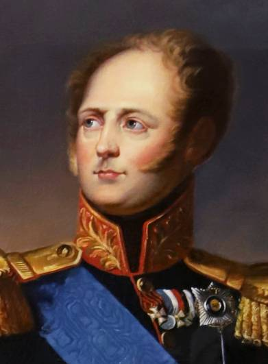
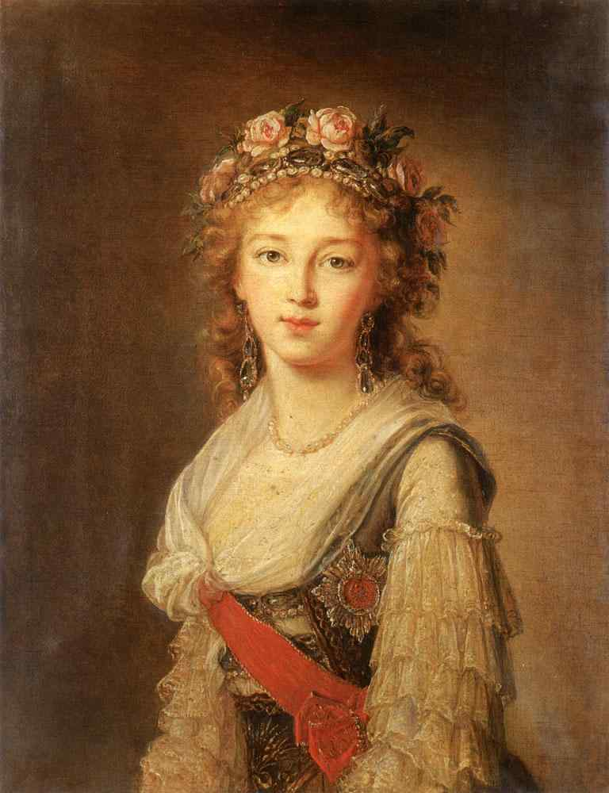
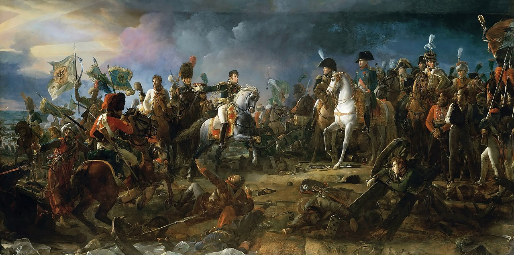
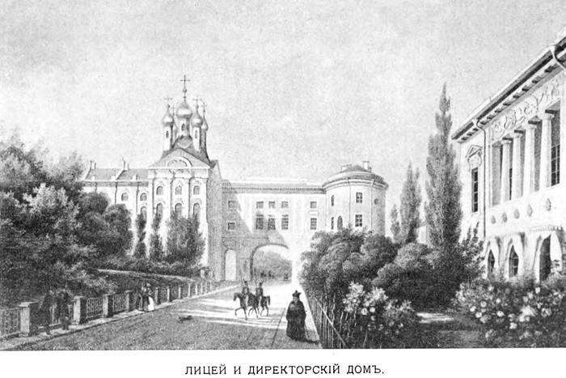

Александр I
Годы жизни:
12 декабря 1777 г. – 19 ноября 1825 г.Годы правления:
12 марта 1801 г. – 19 ноября 1825 г.Характеристика
С его добрым и прекрасным сердцем привык к вечному притворству и испытывал постоянную борьбу со своим сердцем. Но, несмотря на все эти обстоятельства, которые легко могли отозваться на человеке самого твердого характера, я должна отдать справедливость моему повелителю, его сердцу всепрощение так же близко, как далека от него тирания; его нрав кроткий и обходительный, в его разговоре чувствуется легкость и изящество, в его стиле много красноречия, а во всех прекрасных поступках замечается полная скромность.
Графиня Варвара Головина ("Воспоминания")Семья
В 15 лет Александр женился на 14-летней принцессе Баденской Луизе Марии Августе, которая приняла православие с именем Елизавета Алексеевна. Супругу ему выбрала его бабушка Екатерина II, которая заприметила баденских принцесс еще задолго до венчания, а когда пришло время, распорядилась привезти их во дворец, Александру оставалось только выбрать из двух сестер. Поначалу отношения юных супругов казались нежными и трогательными, однако вскоре семейная жизнь разладилась. Обоим супругам приписывают отношения на стороне. В браке у них родилось две дочери, обе умерли в младенчестве. Наиболее длительные отношения у императора были с Марией Нарышкиной, за 15 лет романа отцовство Александра приписывают пятерым ее детям (а общее количество внебрачных детей по самым смелым оценкам более 10, однако никакой достоверной информации на этот счет нет). Супруги поддерживали добрые отношения, но практически жили каждый своей жизнью.
Елизавета Алексеевна
Жена императора Александра I, урожденная Луиза Мария Августа Баденская. Императрица, по описанию современников, была образцом добродетели, уделяла много времени на благотворительность. Под ее покровительством были сиротский приют и несколько школ в Петербурге, особое внимание она уделяла Царскосельскому лицею. После войны 1812 года указом Елизаветы было учреждено Императорское женское патриотическое общество для «вспомоществования бедным, от войны пострадавшим» - старейшая благотворительная организация Российской империи, просуществовавшая вплоть до 1917 года.
Мария Александровна
Дочь Елизаветы Алексеевны и Александра I. Годы жизни: 1799 - 1800 (умерла в младенчестве).
?Елизавета Александровна
Дочь Елизаветы Алексеевны и Александра I. Годы жизни: 1806 - 1808 (умерла в младенчестве).
?
Итоги правления
Внешняя политика
Отечественная война 1812 года
Русско-персидская война (1804—1813)
Русско-турецкая война (1806—1812)
Русско-шведская война (1808—1809)
Внутреняя политика
Культура и образование
При Александре существенно расширилась система образования: к существовавшему ранее Московскому университету добавилось несколько новых высших и привилегированных средних учебных заведений, включая Дерптский, Виленский, Харьковский университеты и знаменитый Царскосельский лицей.
Был издан новый цензурный устав, который по мнению П.С. Рейфмана, был «самым благоприятным для литературы из всех существовавших в России указов о цензуре», ибо он отменял предупредительную цензуру и изымал её из ведения полиции. Основная роль в организации цензурных мероприятий была передана комитетам, учрежденнным при всех университетах Российской империи (цензорами становились непосредственно деканы).
Материалы по теме в открытом доступе:
Статья Всё, что нужно знать об Александре I, в 11 пунктах. Рассказывает историк Андрей Зорин.
Статья День в истории. Родился император Александр I. Президентская библиотека им. Б.Н. Ельцина.
Статья Большая российская энциклопедия. Александр I. Авторы: Н. А. Проскурякова, В. А. Фёдоров
Аудио Александр I. Лекция из курса «Последние Романовы: от Александра I до Николая II» Читает историк Лев Лурье.
Видео Романовы. Фильм Шестой. StarMedia. Babich-Design. Документальный Фильм
Видео Русские цари. Александр I Павлович. Русская История. Исторический Проект. StarMedia
Видео Тайна смерти Александра I — Загадки русской истории. Тамара Эйдельман.